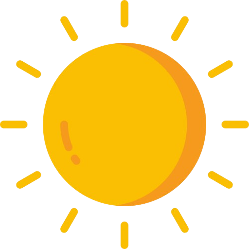
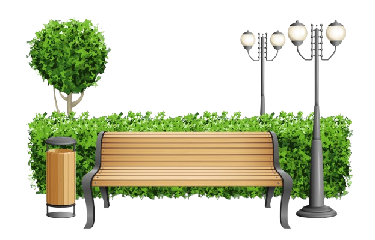
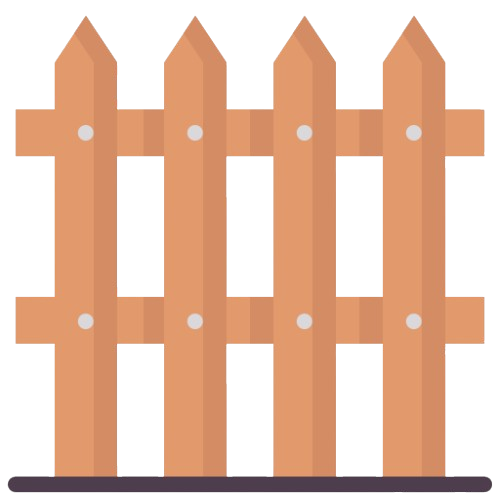
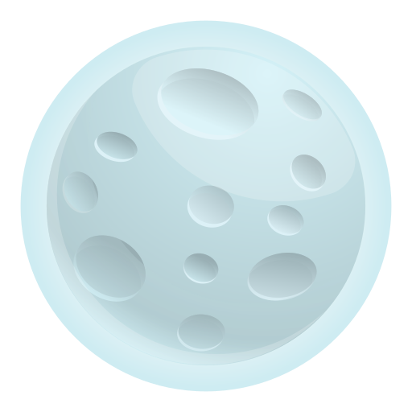

Hi I am Aadya Agarwal. Innovative and detail-oriented
Computer Science student with a passion for
problem-solving, UI/UX design , and application
development. Proficient in Canva and UI/UX design, I
specialize in creating intuitive and visually appealing digital
experiences. With strong analytical skills, I focus on
building scalable, high-performance applications. Currently seeking opportunities to apply my skills in a dynamic and
growth-oriented environment..



CHAPTERS OF MY ACADEMIC JOURNEY
Click any Key to Explore!
I spent my early childhood immersed in imagination, curiosity, and
boundless creativity.
My kindergarten years were filled with color, storytelling, and
joyful learning that sparked my love for discovery.
I studied at Shaurya Army School, where my enthusiasm
for school life truly began to grow.
From arts and crafts to interactive group games, I eagerly took part
in every classroom activity with wide-eyed excitement.
A standout memory from these formative years was my participation in
a fancy dress competition where I proudly portrayed
Indira Gandhi.
That moment on stage helped build my confidence and kindled a
lasting passion for self-expression and public presence.
These early school experiences laid a joyful and meaningful
foundation for the learner, creator, and communicator I continue to
become.
I studied from Class 1 to Class 5 at
Mount Sinai School, where my foundational years were
shaped by curiosity, creativity, and a love for learning.
I actively engaged in a variety of
co-curricular activities including
singing, dancing, debates,
speeches, and quizzes, nurturing both my
confidence and communication skills.
I was awarded Rank 1 in the Handwriting Competition, a
reflection of my discipline and eye for detail even at a young age.
I also earned recognition in science quizzes, which
sparked my early fascination with logic, discovery, and
problem-solving.
These years laid the groundwork for my growth as a confident,
expressive, and enthusiastic learner.
My junior high years at
Ashok Hall Girls Residential School were filled with
exploration, growth, and discovery—both in the classroom and beyond.
I deepened my interest in science,
mathematics, and creative pursuits through subjects
that challenged and inspired me.
With focused effort, I participated in
Maths and Science Olympiads, earning
Rank 1 in the Almora District—a milestone that
highlighted my academic dedication.
I actively joined
debates, speeches, extempore competitions, and vibrant
cultural programs, gaining confidence and honing my
communication skills with every stage appearance.
These formative years shaped my ability to lead with purpose, speak
with conviction, and embrace challenges with energy. They didn’t
just prepare me for high school—they helped me discover who I was
becoming.
My high school years at
Ashok Hall Girls Residential School were a pivotal
chapter where ambition met opportunity and imagination found its
wings.
I achieved Rank 3 in Class 10 and elevated to
Rank 1 in Class 12 in the Almora District, reflecting
both academic excellence and steady growth.
I actively participated in tech events and
innovation fairs, where I explored modern tools, shared
ideas, and cultivated a passion for hands-on learning.
My fascination with astronomy led me to
night sky observation sessions, fueling my curiosity
with each gaze into the stars.
I had the privilege of contributing to the
NASA Sally Ride EarthKAM Project, gaining real-time
exposure to Earth imagery and weather simulations, bridging the gap
between science and exploration.
I also created two interactive games —
“Apple in a Basket” and a
car racing game — using Alice software,
combining storytelling, logic, and design thinking.
These experiences not only marked academic success but also sparked
creativity, deepened problem-solving skills, and inspired a future
in technology and space science.
I am currently a sophomore at
Rajiv Gandhi Institute of Petroleum Technology (RGIPT),
pursuing a Bachelor's degree in
Computer Science and Engineering (CSE).
Secured Rank 10 in the college-level
"Code Decipher" competition organized by
GeeksforGeeks.
Participated in an Internet of Things (IoT) workshop,
where I explored embedded systems and learned the working of
hot air balloons.
Currently a member of the
Science and Technology (SNT) Council under the
Astronomical Club, actively involved in skywatching and
outreach activities.
Job content shown here.
I’ve been actively exploring the intersection of creativity and
code through industry internships and global open-source programs,
gaining real-world experience and shaping my design and
development journey.
Selected as a
Contributor for GirlScript Summer of Code 2025 (GSSoC),
I contributed to impactful open-source projects,
collaborating with global mentors and peers across GitHub
repositories.
This experience enhanced my expertise in
Git, GitHub, version control, and
collaborative software development workflows, while
nurturing a strong sense of community-driven innovation.
Currently working as a
Graphic Design Intern at Nekkotech Solutions Private
Limited, where I create compelling
visual assets, UI elements, posters, banners, and
infographics
that align with brand strategy and elevate user engagement.
My design toolkit includes
Figma, Adobe Illustrator, Photoshop, and Canva,
allowing me to bring concepts to life with precision, creativity,
and consistency.
Simultaneously, I serve as a
Graphic Design Intern at Yapassio, a global learning
platform, where I design
course visuals, event creatives, promotional graphics, and
icons
for both web and mobile platforms.
These dynamic roles have helped me master
visual hierarchy, brand storytelling, layout design,
typography, and responsive design principles—equipping me to
thrive in modern, fast-paced creative environments.

"Just as a trader counts stocks as assets, a coder and designer
treasure their tools
for in every line of code and stroke of design lies the currency of
creation."